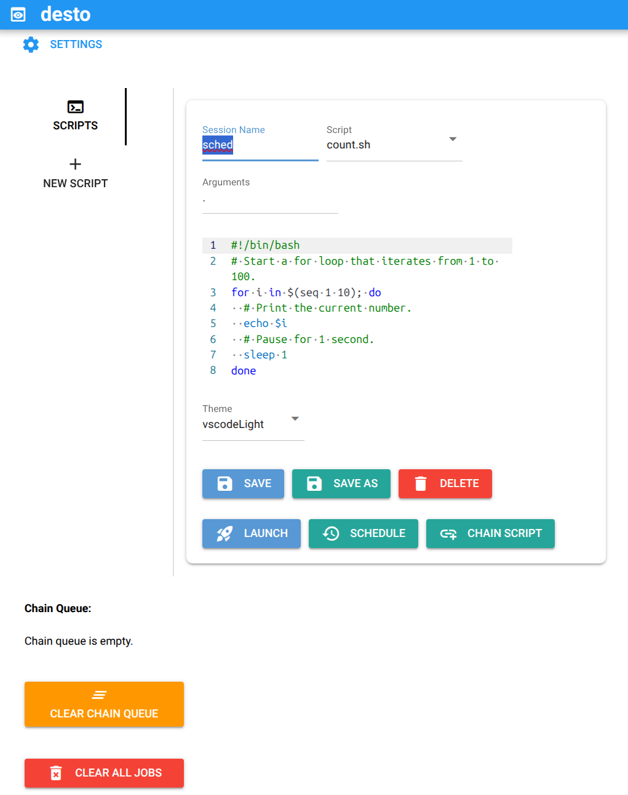

Home
desto lets you run and manage your bash and Python scripts in the background (inside tmux sessions) through a simple web dashboard. Launch scripts, monitor their and your system's status, view live logs, and control sessions—all from your browser.


The key features are:
- One-click session control: Launch, monitor, and stop
tmuxsessions from your browser. - üêö Bash & üêç Python support: Run both bash (
.sh) and Python (.py) scripts seamlessly. - Script management: Use your existing scripts, write new ones, edit, save, or delete them directly in the dashboard.
- ⭐ Favorite commands: Save, organize, and quickly run your frequently used commands with usage tracking and search.
- Live log viewer: Watch script output in real time and view logs for each session.
- Live system stats: See real-time CPU, memory, and disk usage at a glance.
- Scheduling: Schedule scripts or script chains to launch at a specific date and time.
- Script chaining: Queue multiple scripts to run sequentially in a single session.
- Session history: Redis integration for persistent session tracking and history. See what is Redis →
- Scheduled job control: Manage scheduled jobs with a dedicated table—cancel any scheduled job with a click.
- Session & log cleanup: Clear session history and delete logs for all or selected sessions.
- Notifications: Optional Pushbullet notifications for job/session finishes — set the
DESTO_PUSHBULLET_API_KEYenvironment variable or add the key in Settings to receive desktop/mobile pushes when jobs complete. - Persistent script & log storage: Scripts and logs are saved in dedicated folders for easy access.
- üñ•Ô∏è Command-line interface: Manage sessions, view logs, and control scripts from the terminal with our modern CLI. Learn more →
üé¨ Demo

✨ desto Overview¶
üëÄ Dashboard Overview

üöÄ Launch your scripts as `tmux` sessions
When you start `desto`, it creates `desto_scripts/` and `desto_logs/` folders in your current directory. Want to use your own locations? Just change these in the settings, or set the `DESTO_SCRIPTS_DIR` and `DESTO_LOGS_DIR` environment variables. Your scripts show up automatically‚Äîno setup needed. Both `.sh` (bash) and `.py` (Python) scripts are supported with automatic detection and appropriate execution. Ready to launch? Just: 1. Name your `tmux` session 2. Select one of your scripts 3. (OPTIONAL) edit and save your changes 4. Click "Launch"! üé¨ ‚úçÔ∏è Write new scripts and save them
If you want to compose a new script, you can do it right here, or simply just paste the output of your favorite LLM :) Choose between bash and Python templates with syntax highlighting and smart defaults.
⚙️ Change settings
More settings to be added!
üìú View your script's logs
⚡ Quick Start with Docker üê≥¶
The fastest way to ship desto is by using Docker Compose üö¢
You only need Docker and Docker Compose installed on your machine. If you don't have them yet, you can find installation instructions on the Docker website and Docker Compose documentation (or follow your favorite LLM's instructions üòâ).
Start desto in just a few steps:
-
Clone the repository and go to it's main directory
git clone https://github.com/kalfasyan/desto.git && cd desto -
Start the application with Docker Compose
docker compose up -d
✅ Done! üéâ
You’re all set—your desto dashboard is now running at:
üåê http://localhost:8809
üöÄ Essential Docker & Docker Compose Commands
# Start the app in background (Docker Compose)
docker compose up -d
# View logs (Docker Compose)
docker compose logs -f
# Stop and remove services (Docker Compose)
docker compose down
# Rebuild and start (Docker Compose)
docker compose up -d --build
# Run the container directly (plain Docker)
docker run -d -p 8809:8809 \
-v $PWD/desto_scripts:/app/desto_scripts \
-v $PWD/desto_logs:/app/desto_logs \
--name desto-dashboard \
desto:latest
# View logs (plain Docker)
docker logs -f desto-dashboard
# Stop and remove the container (plain Docker)
docker stop desto-dashboard && docker rm desto-dashboard
üñ•Ô∏è CLI & üìä Dashboard Installation with uv or pip¶
If you are not familiar with uv, you may visit uv's official website for more information.
uv is a super-fast Python package manager and virtual environment tool, written in Rust. It helps you manage dependencies, create isolated environments, and install packages much faster than traditional tools like pip.
Requirements¶
Check https://github.com/kalfasyan/desto/blob/main/pyproject.toml
Installation Steps¶
-
Install
tmuxandat
Instructions for different package managers
- **Debian/Ubuntu**- **Almalinux/Fedora**sudo apt install tmux at- **Arch Linux**sudo dnf install tmux at**Note:** The `at` package is required for scheduling features. If you don't plan to use script scheduling, you can skip installing `at`.sudo pacman -S tmux at -
Install
desto
Installation Steps
- (Recommended) With [uv](https://github.com/astral-sh/uv), simply run:This will install desto in your project ✅ Or if you don't have a project yet, you can set up everything with [`uv`](https://docs.astral.sh/uv/getting-started/installation/): 1. [Install `uv`](https://docs.astral.sh/uv/getting-started/installation/) by following the instructions on the official site. 2. Create and set up your project:uv add destoDone! - With pip:mkdir myproject && cd myproject uv init uv venv source .venv/bin/activate uv add destopip install desto -
Run the Application
desto
üéâ Done!
Open your browser and visit: http://localhost:8809 üöÄ
Global desto Installation as a uv Tool (includes CLI)¶
# Install desto CLI globally
uv tool install desto
# Or install from source
cd /path/to/desto
uv tool install . --force
This installs two executables:
- desto - Web dashboard
- desto-cli - Command-line interface (work in progress)
Quick CLI Usage
# Check system status
desto-cli doctor
# List all sessions
desto-cli sessions list
# Start a new session
desto-cli sessions start "my-task" "python my_script.py"
# View session logs
desto-cli sessions logs "my-task"
# Kill a session
desto-cli sessions kill "my-task"
# List all scripts
desto-cli scripts list
# Create new script
desto-cli scripts create "my_script" --type python
# Edit script in $EDITOR
desto-cli scripts edit "my_script"
# Run script in tmux session
desto-cli scripts run "my_script"
# Run script directly
desto-cli scripts run "my_script" --direct
üìñ Full CLI Documentation →
The CLI provides the same functionality as the web interface but optimized for terminal use, including rich formatting, real-time log viewing, and comprehensive session management.
License¶
Shield: 
This work is licensed under a Creative Commons Attribution 4.0 International License.

TODO¶
- [ ] Explore possibility to pause processes running inside a session
- [ ] Add dark mode/theme toggle for the dashboard UI
desto makes handling tmux sessions and running scripts approachable for everyone—no terminal gymnastics required!